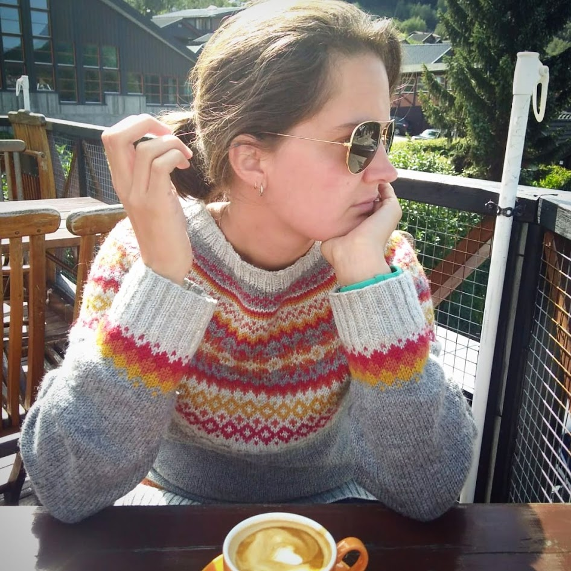

This is me

I like to knit sweaters :).
Welcome to Live In Cin Designs! I’m Cindy, and I design colorful, cozy knitwear and crochet patterns made for everyday wear—from stranded colorwork yokes and textured hats to playful amigurumi.
Knitwear to Live In

I like to knit sweaters :).
Welcome to Live In Cin Designs! I’m Cindy, and I design colorful, cozy knitwear and crochet patterns made for everyday wear—from stranded colorwork yokes and textured hats to playful amigurumi.